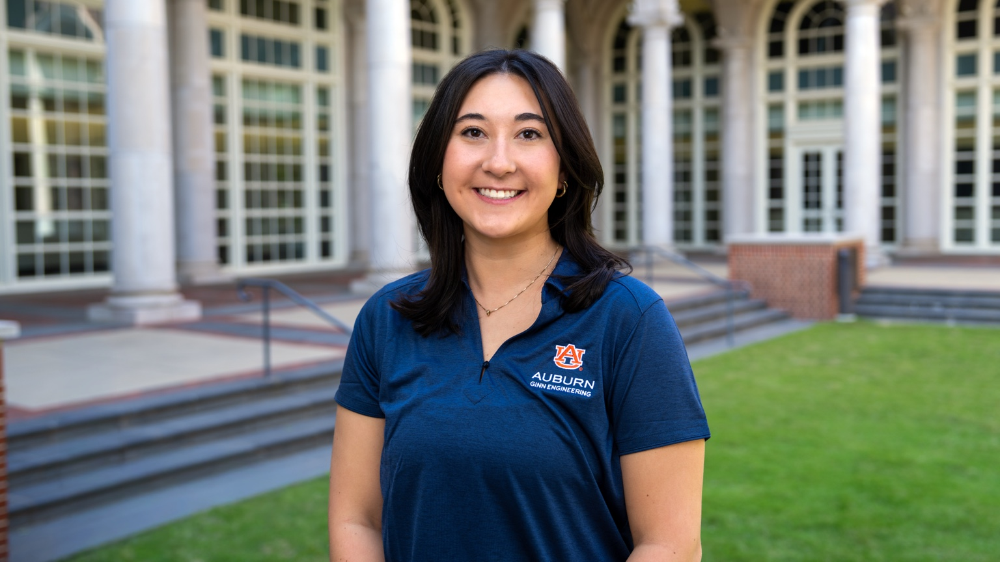
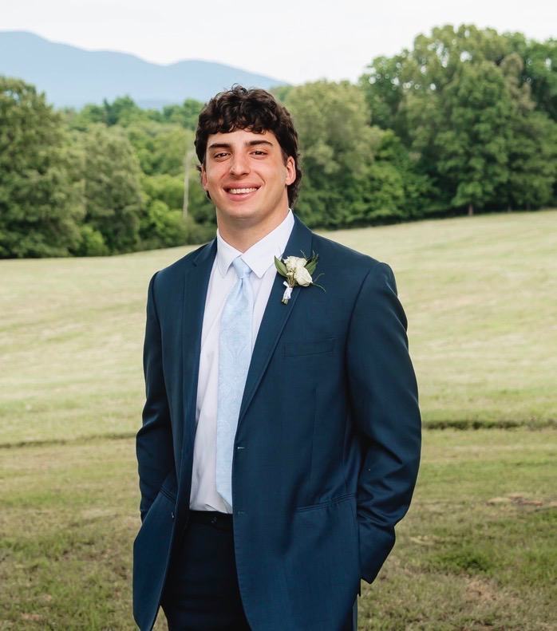
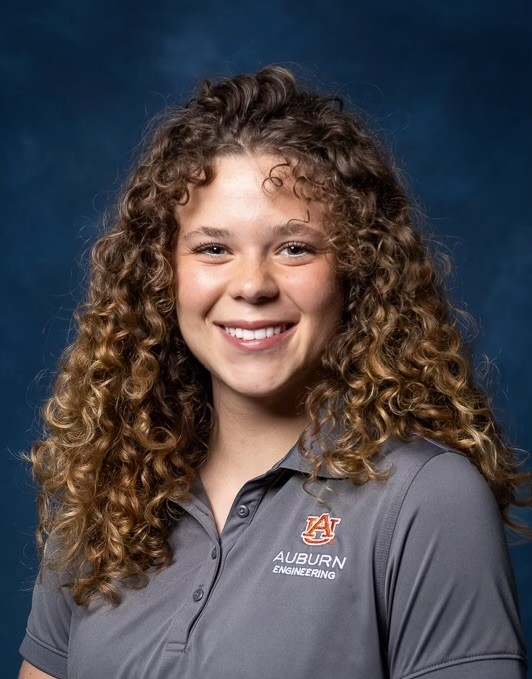

01
Solar Charging
Renewable energy input provides a way to recharge the system without relying on the electrical grid.
AUBURN UNIVERSITY • SENIOR DESIGN
Reliable secondary power designed around renewable energy, portable storage, and smart monitoring.
Explore the Project ↓Power outages caused by severe weather and other disasters can leave people without access to essential electricity. Our team is developing a portable power station that combines solar generation, battery storage, power electronics, and user monitoring into one practical system.
Renewable energy input provides a way to recharge the system without relying on the electrical grid.
Energy is stored for use when sunlight is unavailable or emergency power is needed.
Converts stored DC energy into AC power for compatible equipment and emergency loads.
Convenient low-power charging for phones and other personal electronics.
Optimizes the solar charging process to make effective use of available sunlight.
Monitors and manages battery operation as part of a safe, reliable energy-storage system.
Keep the system portable enough to move and deploy when needed.
Balance battery capacity, load requirements, and portability.
Develop a practical design while considering component and manufacturing costs.
Manage heat generated by the power electronics and charging system.
Protect internal components while supporting a portable form factor.
Explore mobile-app monitoring for system status and energy information.
Potential applications include emergency preparedness, storm-related outages, camping, and other situations where dependable portable electricity is valuable.
A multidisciplinary team of Auburn University engineering seniors.

Computer Engineering • Team Lead
Beth is a senior Computer Engineering student at Auburn University and serves as the team lead, helping coordinate the project's technical development and overall progress.
Electrical Engineering • Team Member
Cole is a senior Electrical Engineering student contributing to the electrical design and development of the portable emergency power station.

Electrical Engineering • Team Member
Ike is a senior Electrical Engineering student contributing to the power electronics, energy-storage, and electrical systems of the project.
Electrical Engineering • Team Member
Averie is a senior Electrical Engineering student supporting the design and development of the team's renewable emergency power system.

Electrical Engineering • Team Member
Macy is a senior Electrical Engineering student contributing to the electrical and system-level development of the portable power station.
Computer Engineering • Team Member
Blake is a senior Computer Engineering student contributing to the computing, monitoring, and control aspects of the project.